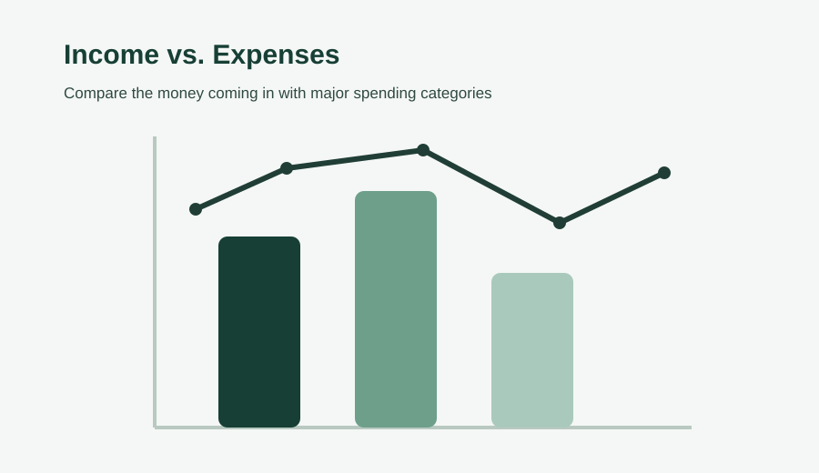
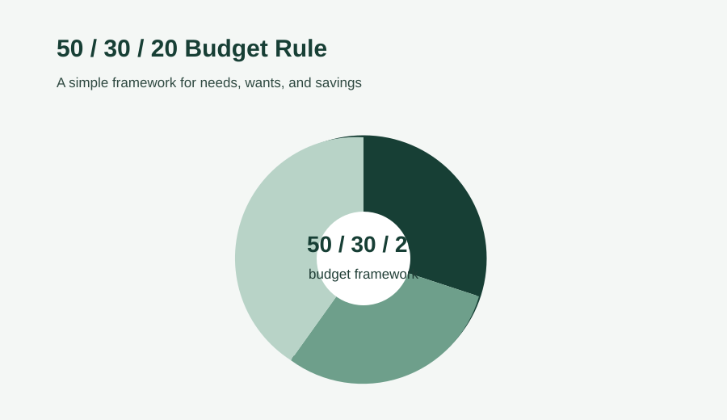
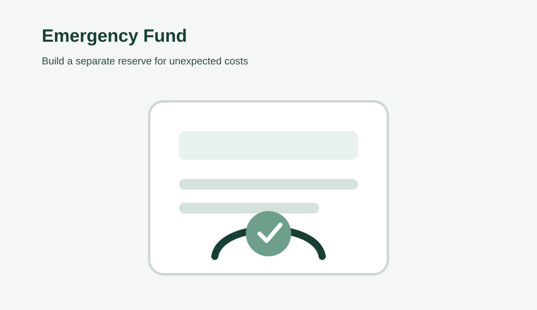

Most people do not abandon budgeting because they cannot understand a spreadsheet. They abandon it because the plan was unrealistic from the beginning. A budget built around ideal spending may look neat on paper, but it becomes difficult to follow when groceries cost more than expected, an annual bill arrives, or income changes.
A useful personal budget is different. It starts with what is actually happening with your money and turns that information into a plan you can review and adjust. The goal is not to control every purchase. The goal is to know where your money is going, decide what matters most, and reduce the number of financial surprises you face.
By the end of this guide, you will have a practical process for totaling income, tracking expenses, choosing budget categories, assigning money to savings and goals, and reviewing the plan without treating every change as a failure.
What a Personal Budget Is Actually For
A personal budget is a plan that compares the money you expect to receive with the money you expect to spend and save over a defined period, usually a month. At its simplest, it should answer a clear question: does the money coming in cover the money going out, with enough room for savings or other priorities?
That makes budgeting a decision tool rather than a punishment system. A budget can show that housing is consuming a large share of income, that subscriptions have accumulated, or that an irregular expense needs to be planned for earlier. Once those patterns are visible, you can decide what to change.
Step 1: Total Every Source of Income
Start with a complete picture of the money that normally comes in. Use dependable income as the foundation of the monthly plan and separate irregular money from the baseline when it is not guaranteed.
- Regular salary or wages
- Freelance, contract, or side income
- Child support or alimony
- Government benefits where applicable
- Bonuses, refunds, or other irregular income, tracked separately from dependable monthly income
If your income changes from month to month, a conservative baseline can make the budget more resilient. Planning around a lower realistic month gives you room to adjust when income is stronger. It also reduces the risk of committing to expenses that only work when everything goes well.

Step 2: Track Where Your Money Actually Goes
This is the step that turns a budget from a guess into a useful financial record. Before deciding what to cut, track what you already spend. For at least two to four weeks, record regular bills and small purchases alike.
Include rent or housing, utilities, groceries, transportation, subscriptions, eating out, personal purchases, debt payments, transfers, and other recurring costs. Small transactions matter because several modest purchases can become a meaningful monthly category when viewed together.
You can track spending with a notebook, spreadsheet, budgeting app, or bank and card statements. The tool is less important than the quality of the record. If the information is incomplete, the budget will be built on incomplete assumptions.
Do not judge the spending while you are collecting it
The first goal is visibility. If you immediately label every purchase as good or bad, you may start changing behavior before you understand the pattern. Give yourself a short tracking period first. Then look for the categories that are consistently higher than expected.
Step 3: Sort Spending Into Needs, Wants, and Savings
Once the numbers are visible, group your spending into categories that help you make decisions. A widely used starting framework is the 50/30/20 approach:
- 50% for needs: housing, utilities, groceries, insurance, transportation, and minimum debt payments.
- 30% for wants: dining out, entertainment, subscriptions, hobbies, and non-essential shopping.
- 20% for savings and debt repayment beyond the minimum: emergency savings, long-term goals, and additional debt payments.
These percentages are a starting point, not a requirement that every household must follow exactly. Housing costs, income, family responsibilities, debt, and other circumstances can make a different balance more realistic. The value of the framework is that it creates a simple way to see how your money is distributed.
Why the needs versus wants distinction matters
The distinction is useful because it makes trade-offs easier to identify. When income falls or an unexpected expense appears, essential costs may have less flexibility than discretionary spending. A budget that separates these categories helps you see where adjustments are possible before a financial problem becomes larger.

Step 4: Build the Working Monthly Budget
Now turn the information into a plan. Put total income at the top and list expense categories underneath it. Then assign a realistic amount to each category and calculate what remains.
- Write down total dependable monthly income.
- List essential expenses and minimum debt payments.
- Add flexible spending categories based on your tracking records.
- Add savings and other financial goals as planned categories.
- Subtract the planned outflow from income.
- Give any remaining money a clear purpose instead of leaving it unassigned.
If the result is negative, start by reviewing flexible expenses because they often offer more immediate room for adjustment than fixed costs. If the result is positive, decide in advance whether the surplus should strengthen savings, support a specific goal, or reduce debt.
The budget should remain a working document. A change in rent, income, transportation costs, family expenses, or another major assumption is a reason to update the plan. An outdated budget is less useful than a simple one that reflects current reality.
Plan for Irregular Expenses Before They Become Emergencies
Some expenses are irregular but predictable. Annual subscriptions, registration fees, gifts, school-related costs, repairs, and seasonal spending can all create pressure if they are treated as surprises.
Look at the expected cost and estimate how much you would need to set aside each month to prepare for it. Even when the payment is not monthly, the financial impact can be spread across several months. This approach can prevent a single large bill from consuming money that was intended for another priority.
Build an Emergency Fund Into the Budget
A budget should also leave room for events that cannot be predicted precisely. Common financial guidance uses a target of roughly three to six months of essential living expenses for an emergency fund. The right amount depends on income stability, essential costs, dependents, and other circumstances.
If that target feels too large, start smaller. The important change is to make emergency savings a planned category rather than something that receives whatever happens to be left at the end of the month. A consistent contribution can gradually build a separate reserve.
Keeping emergency savings separate from everyday spending can also make the purpose of the money clearer and reduce the temptation to use it for routine purchases.

Common Mistakes That Break a Budget
A budget can fail even when the arithmetic is correct. The problem is often the assumptions behind the numbers.
1. Budgeting from ideal spending
If your actual grocery spending is consistently higher than the amount in the plan, simply writing down a smaller number does not solve the problem. Start with evidence, then decide what change is realistic.
2. Forgetting irregular expenses
Annual and seasonal costs still belong in the financial plan. If you know a payment will arrive later, start preparing for it before the due date.
3. Treating the budget as fixed
Income and expenses change. Review the budget each month and adjust categories when the underlying situation changes.
4. Leaving no buffer
A small miscellaneous or buffer category can absorb ordinary surprises. Without one, a minor unplanned cost can force you to take money from another important category.
Choose Tools That Reduce Friction
You do not need complicated software to create a good personal budget. The best tool is the one that makes it easy for you to keep accurate records and review them regularly.
- Spreadsheets: useful when you want control over categories, formulas, and monthly comparisons.
- Budgeting apps: useful when automatic transaction tracking makes it easier to keep records current.
- Envelope-style systems: useful when assigning a specific amount to a spending category helps prevent overspending.
Choose simplicity over features you will not use. A basic spreadsheet that you update consistently can be more valuable than a sophisticated system that becomes difficult to maintain.
Use a Simple Plan, Track, and Review Cycle
A sustainable budgeting habit can be organized around three moments: plan, track, and review.
Plan: At the beginning of the month, assign expected income to essential expenses, flexible spending, savings, and other priorities.
Track: During the month, record meaningful spending instead of relying on memory. Update the budget when something important changes.
Review: At the end of the month, compare the plan with actual results. Ask which categories were accurate, which were unrealistic, and what should change next month.
This cycle keeps budgeting connected to real decisions. It also makes it easier to improve the system gradually rather than expecting the first version to be perfect.
What If Your Income Is Already Stretched?
A budget cannot create money that is not there, but it can make the constraints visible. Protect essential obligations first. Then examine flexible spending, recurring services, payment timing, lower-cost alternatives, and realistic ways to increase income.
It is also important not to judge a budget by an arbitrary percentage target. If essential costs already consume most of the available income, the first objective may be stability. Once the basics are under control, you can work toward stronger savings and other financial goals.
Conclusion: Build a Budget You Can Keep Using
A personal budget works best when it is based on real numbers and designed for real life. Start by totaling dependable income. Track actual spending before setting limits. Group expenses into useful categories, plan for irregular costs, include savings, and review the results regularly.
You do not need a perfect spreadsheet or a complicated financial system. You need a clear process that helps you see what is happening, make decisions, and adjust when circumstances change.
Takeaway: Spend two to four weeks tracking your actual income and expenses before making major budget cuts. Once your numbers are real, the rest of the budgeting process becomes much easier to build and maintain.